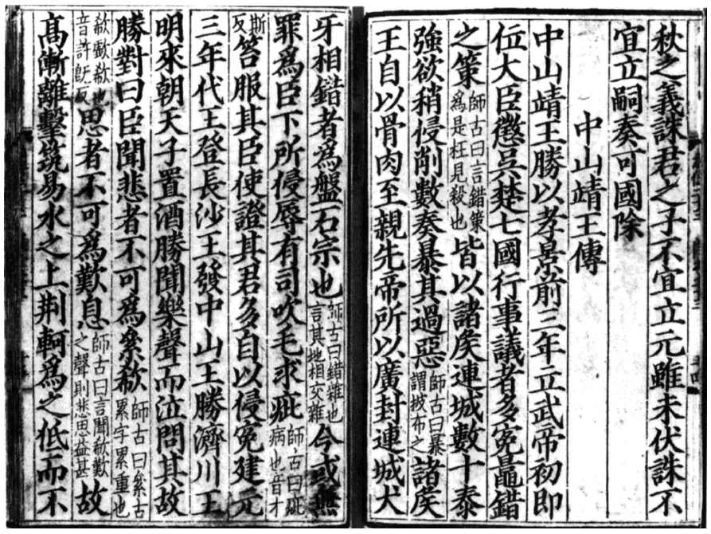

同汉朝和唐朝统治者相比，宋朝皇帝在对外关系方面显得十分被动。他们从未发动过大的战役，去恢复帝国在欧亚大陆中心地区的疆土。相反，宋朝第二任皇帝只想从游牧民族控制下收复北京和长城之间的领土。但是，他惨遭失败，所以他的继承者放弃了对这一地区的要求，甚至每年向游牧民“送礼”，这实际上是变相的纳贡。因此，宋朝从未收复东北领土，也没收复西北领土，而西北地区可提供前往西方的陆上通路。
这是宋朝的一个致命弱点，使宋朝易受游牧民的入侵。虽然“送礼”政策实行了一个半世纪，但当宋朝皇帝轻率地试图收复东北领土时，灾难降临了。他非但没有轻易取胜，反而惨遭失败，从而导致了游牧民对中国北部的大规模入侵。宋朝的防御土崩瓦解，朝廷只得留在中国中部的长江流域和南方地区。因此，宋朝的后半期（1127—1279年）被称为“南宋”，前半期（960—1127年）被称为“北宋”。
宋朝最初未能收复边陲各地，后来又丢失了北半个中国，这遭到中国后来历史学家们的严厉谴责。虽然这种批评是不可否认的，但中国文明有许多方面，尤其是在文化领域，于唐、宋几个世纪内达到顶峰，这也是事实。在这几个世纪中，除了出现许多学者撰写的无所不包的各朝历史外，还出现了佛教经文和儒家经典的大百科全书；伟大的诗人和艺术家的杰作大批涌现；写在书卷上的书法艺术同绘画一样受到高度评价；精美的瓷器几乎如玻璃一样薄，一样透明；印刷术的发明价值连城，被利用来复制和发行大批佛经；科学技术取得了至今才得到充分理解的非凡的进展（见第九章第二节）。

图94 用木版印刷的《汉书》（汉朝的历史）的书页。印制于1208年至1224年间。这本书是宋版印刷的最好范例之一。
除文化上的成就外，宋朝时期值得注意的是，发生了一场对整个欧亚大陆有重大意义的商业革命。这场革命的根源可以在中国经济生产率的明显增长中找到。技术的稳步发展提高了传统工业的产量。同样，水稻早熟品种的引进，使作物在过去只能一季一熟的地方达到一季两熟，从而促进了农业。此外，宋朝兴修的水利工程大大扩大了水田灌溉面积。据估计，11世纪至12世纪，水稻产量增加了一倍。
生产率提高使人口的相应增长成为可能，而人口增长反过来又进一步推动了生产，如此循环往复不已。贸易量也随着经济活动的迅速发展而上升。中国首次出现了主要以商业、而不是以行政管理为中心的大城市。
比起国内贸易的突飞猛进，对外贸易的增长更为明显。自汉代起，中国对外贸易的规模已相当大，到了唐朝，尤其是宋朝，对外贸易量更是远远超过以往任何时候。当然，对外贸易迅速发展的基础，是中国前所未有的经济生产率。航海技术的改进——其中包括指南针、带有可调中心垂直升降板的平底船，以及代替竹帆的布帆的使用——也很重要。最后，穆斯林商人和水手从事贸易的积极性，也加速了海外贸易的发展；当时，他们是在亚洲诸海中活动的伟大创业者。
结果，海港而不是古老的陆路，首次成为中国同外界联系的主要媒介。当时，中国的经济居主导地位，这可以由以下事实看出来：中国的出口品大多是制成品，如丝绸、瓷器、书画等；而进口品多半是原材料，如香料、矿石和马匹等。最后应该指出，宋朝时期，中国人首次大规模从事海外贸易，不再主要依靠外国中间商。因而，宋朝时的中国正朝成为一个海上强国的方向发展。不过，对中国历史和世界历史而言，最重要的事实是，这一潜在的可能从未实现。此外，同样重要的是，宋朝时的商业革命丝毫未对中国社会产生爆炸性的影响，而西方与此相应的商业革命却对西方社会产生了爆炸性的影响（见本章第四节）。